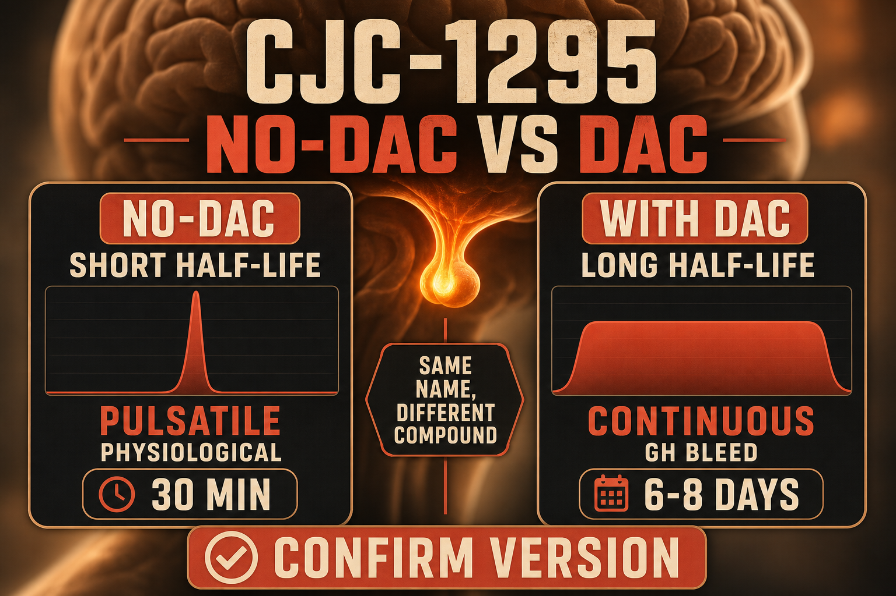

What CJC-1295 No-DAC Is
CJC-1295 exists in two distinct forms that produce very different effects and are often confused:
CJC-1295 No-DAC (also called Modified GRF 1-29 or Mod GRF 1-29) has a half-life of approximately 30 minutes. It produces a sharp, pulsatile GH release that closely mimics natural GHRH stimulation. This is the form used in most combination protocols with Ipamorelin.
CJC-1295 with DAC (Drug Affinity Complex) has a half-life of approximately 6-8 days due to albumin-binding technology. It produces sustained continuous elevation of GH and IGF-1 rather than a pulse. This is a fundamentally different pharmacological profile - sometimes referred to as a "GH bleed."
This profile covers CJC-1295 No-DAC specifically. When anyone says "CJC-1295 and Ipamorelin" in a clinical or community context, they almost always mean the No-DAC version.
CJC-1295 No-DAC binds GHRH receptors in the anterior pituitary and triggers GH release through the same pathway the hypothalamus uses naturally - it is a synthetic replica of the 29-amino-acid active fragment of GHRH. In clinical practice it is often prescribed through compounding pharmacies alongside Ipamorelin. Its compounding status under 503A is distinct from compounds on the FDA Category 2 list.
Plain English Version
The Conductor Who Gives the Cue
Your hypothalamus releases GHRH (growth hormone-releasing hormone) in a rhythmic pattern - the signal that tells your pituitary gland when to release a burst of growth hormone. In your 20s this rhythm is strong and the pituitary responds with a reliable pulse. With age, the hypothalamic signal weakens, the pituitary becomes less responsive, and the GH pulses that happen during deep sleep and exercise become smaller and less frequent.
CJC-1295 No-DAC is the conductor who walks onto the stage and gives the cue. It delivers the GHRH signal directly to the pituitary - a clear, precise cue that says release growth hormone now. The pituitary, recognizing a familiar signal through the same receptor it has always used, responds with a GH pulse.
The no-DAC part is important: this version gives one sharp cue, the pituitary responds, and the signal is gone in about 30 minutes - clean, pulsatile, physiological. The DAC version gives a cue that echoes for a week, producing a continuous background hum rather than a sharp pulse. For most protocols mimicking natural GH biology, the pulsatile version is preferred.
One sentence: CJC-1295 No-DAC tells your pituitary to release growth hormone through the same signal pathway your hypothalamus uses - producing a sharp, natural-feeling pulse that mimics the GH biology of your younger years.
How To Picture It

How It Works
CJC-1295 No-DAC binds GHRH receptors in the anterior pituitary's somatotroph cells, triggering the downstream signaling cascade that produces GH secretion. The synthetic modifications to the natural GHRH 1-29 fragment (primarily D-amino acid substitutions at positions 2 and 8) slow enzymatic degradation and extend the half-life from the native 4-minute GHRH half-life to approximately 30 minutes - long enough to produce a meaningful GH pulse without altering the pulsatile character of the release.
Documented Benefits
physiologically appropriate
Dosing Protocol
| Phase | Dose | Frequency | Timing | Notes |
|---|---|---|---|---|
| Starting | 100mcg | Once daily | Bedtime fasted | Establish response |
| Standard | 100-200mcg | Once or twice daily | Bedtime or bedtime + morning | Most documented |
| With Ipamorelin | 100-200mcg CJC + 200mcg Ipa | Once or twice daily | Same syringe, fasted | Classic combination |
Cycle 8-12 weeks on, 4 weeks off - same cycling requirement as Ipamorelin.
Reconstitution Standard
CND (5mg vial) + 2ml BAC water = 2.5mg/ml 100mcg = 4 units | 200mcg = 8 units
Dosage Build-Up Timeline
- Week 1-2: 100mcg bedtime alone - establish baseline
- Week 3-8: 100-200mcg bedtime ± morning
- Week 9-12: Reassess; add Ipamorelin if not already stacking
- Week 13-16: Mandatory 4-week off cycle
Common Mistakes
fundamentally different pharmacological profile; always confirm which version you have
both are GHRH analogs but with very different half-lives and regulatory histories
same fasting requirement as all GH peptides
CJC-1295 alone produces smaller GH pulses than when combined with Ipamorelin through the complementary ghrelin pathway
receptor sensitivity does reduce
Contraindications And Cautions
GH/IGF-1 elevation concern
GH affects insulin sensitivity
GHRH receptor stimulation in pituitary tissue
WADA prohibited
What To Track
- Sleep quality weekly
- Body composition monthly
- IGF-1 at baseline and 8-12 week mark
- Recovery time post-exercise
- Water retention and joint tenderness at higher doses
Stacks Well With
- Ipamorelin - the canonical combination; dual-pathway GH amplification
- BPC-157 or KLOW - tissue repair alongside GH
- Tesamorelin - both are GHRH analogs; not typically combined (redundant receptor); choose one
Sources
- PeakedLabs CJC-1295 Ipamorelin Stack 2026. peakedlabs.com
- Peptideslabuk GH Secretagogue Comparison 2026. peptideslabuk.com
- Superpower.com CJC-1295 + Ipamorelin guide April 2026. superpower.com
- Telehealthally.com Ipamorelin CJC-1295 Stack Guide 2026. telehealthally.com
- Teichman SL et al. CJC-1295 GH stimulation. JCEM 2006. pubmed.ncbi.nlm.nih.gov
For educational and research documentation purposes only. Not medical advice. Always speak with a qualified healthcare professional before making health decisions.